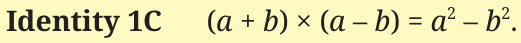
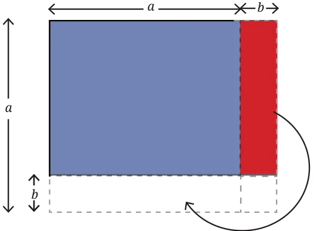

Pattern 1
Look at the following pattern.
\(2(2^2 + 1^2) = 3^2 + 1^2\)
\(2(3^2 + 1^2) = 4^2 + 2^2\)
\(2(6^2 + 5^2) = 11^2 + 1^2\)
\(2(5^2 + 3^2) = 8^2 + 2^2\).
Take a pair of natural numbers. Calculate the sum of their squares. Can you write twice this sum as a sum of two squares? Try this with other pairs of numbers. Have you figured out a pattern?
Notice that \(2(5^2 + 6^2) = (6 + 5)^2 + (6 - 5)^2\). Do the identities below help in explaining the observed pattern?
\((a + b)^2 = a^2 + 2ab + b^2\)
\((a - b)^2 = a^2 - 2ab + b^2\)
\((a + b)^2 + (a - b)^2 = (a^2 + 2ab + b^2) + (a^2 - 2ab + b^2)\)
Adding the like terms \(a^2 + a^2 = 2a^2\), \(b^2 + b^2 = 2b^2\) and \(2ab - 2ab = 0\), we get
\(2(a^2 + b^2) = (a + b)^2 + (a - b)^2\).
Pattern 2
Here is a related pattern. Try to describe the pattern using algebra to determine if the pattern always holds.
\(9 \times 9 - 1 \times 1 = 10 \times 8\)
\(8 \times 8 - 6 \times 6 = 14 \times 2\)
\(7 \times 7 - 2 \times 2 = 9 \times 5\)
\(10 \times 10 - 4 \times 4 = 14 \times 6\)
The pattern here appears to be \(a^2 - b^2 = (a + b) \times (a - b)\). Is this a true identity? Using the distributive property, we get
\((a + b) \times (a - b) = a^2 - ab + ba - b^2\).
Adding the like terms, \(ab + (-ab) = 0\), we see that indeed

You had seen this identity earlier in Figure it Out 5 (i). Use Identity 1C to calculate \(98 \times 102\), and \(45 \times 55\).
Show that \((a + b) \times (a - b) = a^2 - b^2\) geometrically.

Hint:

What do we get when this piece is moved?
Sridharacharya (750 CE) gave an interesting method to quickly compute the squares of numbers using Identity 1C! Consider the following modified form of this identity —
\(a^2 = (a + b)(a - b) + b^2\)
Why is this identity true?
Now, for example, \(31^2\) can be found by taking \(a = 31\) and \(b = 1\).
\(31^2 = (31 + 1)(31 - 1) + 1^2\)
\(= 32 \times 30 + 1\)
\(= 961\).
\(197^2\) can be found by taking \(a = 197\), and \(b = 3\).
\(197^2 = (197 + 3)(197 - 3) + 3^2\)
\(= 200 \times 194 + 9\)
\(= 38809\).